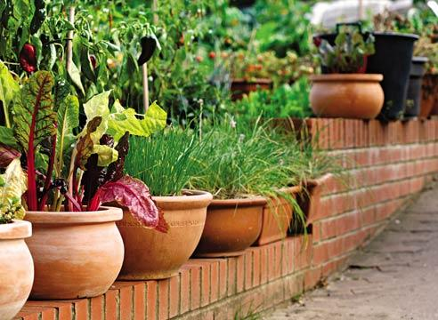
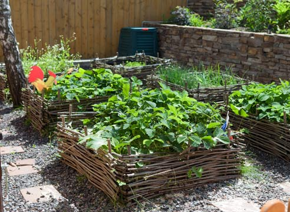

|
В последнее время в Черновцах всё больше внимания уделяется устройству декоративного огорода. Грамотно и тщательно выполненные грядки, могут украсить ваш сад не хуже цветника и при этом, будут обладать еще и полезными качествами.
Декоративный огород – это дело непростое и трудоемкое, он требует постоянного ухода и внимания. Чтобы декоративный огород доставлял удовольствие, необязательно делать его большим. Наоборот, чем компактней он будет, тем больший урожай вы сможете собрать с единицы площади. Достаточно просто грамотно все распланировать и обеспечить хороший уход растениям.
При планировании декоративного огорода, прежде всего, необходимо изучить особенности участка, прорисовать планы, видовые точки. Рассчитать сколько понадобится семян и рассады. Как правило, огород располагается вблизи плодового сада: выбирая его местоположение, важно учитывать ориентацию по сторонам света и освещенность. Планировать его лучше в конце сезона, и тогда на следующий год у вас на участке возникнет плодово-цветущий оазис. А если подойти к вопросу планирования огорода творчески и с фантазией, то ваш огород будет выглядеть очень привлекательно.
Очень эффектно смотрятся высокие грядки, особенно грядки-ящики со стенками из досок, кирпича или камня. К тому же, высокие грядки удобнее обрабатывать, они лучше прогреваются, весной и в них сложнее пробраться корневищным сорнякам типа пыряя и одуванчика.
Ширина грядки может быть от 70 до 120 см, оптимальная ширина проходов между грядками – от 45 см, лучше 50-60 см. Но в декоративном огороде можно повольничать с формой и высотой грядок, сделать их, к примеру, треугольными или круглыми, расположить каскадом, на разной высоте, или разместить по территории огорода в форме шахматной доски.
К пространству между грядками тоже можно отнестись креативно: замостить плиткой, отсыпать гравием, выложить спилами деревьев или засыпать разноцветной щепой или корой.
Важно, чтобы в междурядьях было удобно ходить, особенно в грязную погоду, и не было доступа сорнякам. Модули и гряды мастерят из дерева или плетут из ивы.
Очень важным фактором в создании огорода является выбор почвенного состава. Редко бывает, что на участке, только "вышедшем" из периода строительства, есть хорошая почва. При выборе почвы нужно быть особенно внимательным. Как правило, применяются смеси на основе торфа. Это приемлемый вариант выбора в случае, если известно происхождение почвосмеси и агрохимический состав. Привезенную почву необходимо хорошо просеять, выбрать остатки корней, мелкие камешки, мусор. Рекомендуемая толщина подготовки почвы 25-30см.
Декоративный огород несёт на себе не только эстетическую, но и практическую функцию. Наиболее подходящие для выращивания следующие овощные культуры: капуста (декоративная, цветная, краснокочанная, пекинская и другая); редис (за сезон можно получить не менее 3-х урожаев, только не стоит забывать вовремя подсеивать семена); корнеплоды - морковь, свекла, редька (для приготовления наиболее полезного овощного сока); зеленные культуры (сельдерей, шпинат, щавель, укроп, петрушка, лук, различные сорта салата, горчица и многие другие); лук и чеснок; тыква, кабачок, патиссон, огурец (при наличии теплицы); томат, перец, баклажан (при наличии теплицы); бобовые культуры - горох, фасоль; пряные и лекарственные растения (базилик, укроп, майоран, мята и другие). Из ягодных культур на декоративном огороде можно выращивать землянику и клубнику (предпочтительно ремонтантных сортов).
Планируя огородные посадки, надо также помнить про совместимость растений: например лук и чеснок плохо уживаются рядом с горохом и фасолью, зато хорошо — с земляникой и морковью, а огурцы отлично соседствуют с горохом, фасолью, чесноком. Растения одного семейства (например, петрушку и морковь) лучше не сажать рядом, потому что они привлекают одинаковых вредителей.
Вполне уместно смотрятся в декоративном огороде и цветы: ноготки (календула), бархатцы, настурция.
Они не только украсят огород, но и отпугнут вредителей, например нематоду. А цветки и семена настурции в некоторых культурах даже используют в пищу. А если хотите, чтобы уже с начала лета грядки выглядели декоративно, высадите на них эффектные многолетники: разнообразные луки, ревень, щавель, кустики земляники. Совместите овощи с огородом пряностей, на котором растут любисток, иссоп, тимьян, шалфей и другие многолетние травы и перезимовавшая курчавая петрушка. В самом начале весны пустующие места, предназначенные под теплолюбивые культуры, заполните цветущей рассадой - виолой, ноготками. Эти растения совсем неприхотливы, и их можно без ущерба пересаживать в цветущем виде с места на место. Можно поставить сюда горшки с комнатной геранью, розмарином, лавром.
Декор в огороде.
В огородах приветствуется использование различных неожиданных предметов.
Например, цветочницы в лейках и ведрах, садовые бочки, расписанные в соответствии со стилем и цветом построек, тачки и тележки, приспособленные под выращивание рассады овощей и цветов, и т.д. Очень украсят грядки самодельные или купленные в садовом центре этикетки для растений.

Огородное пугало, скворечник, корзины и крынки также придутся весьма кстати. Главное в декоре огорода - романтизм и отличное настроение. Не стоит рассаживать садовых гномов под каждым кустом, лучше поселить веселую семейку в забавной декоративной тачке. Среди материалов предпочтение отдается натуральным (дереву, ивовому пруту и камню).

|